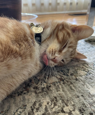
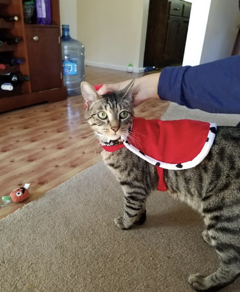
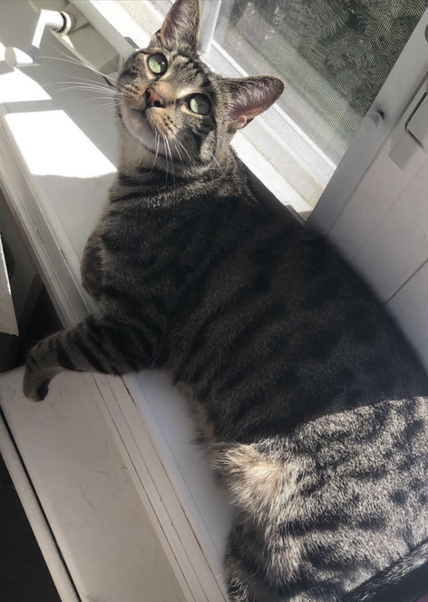
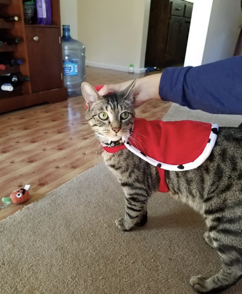
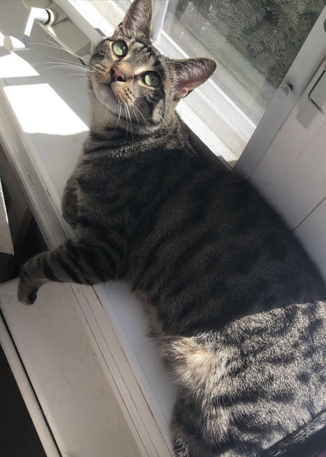
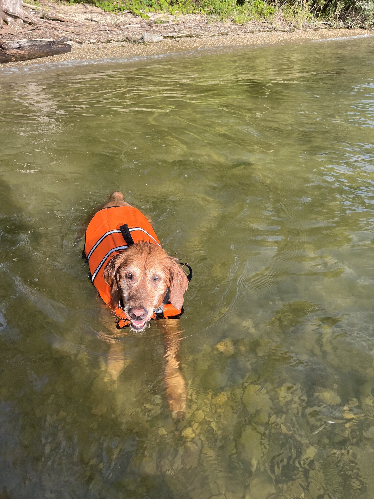
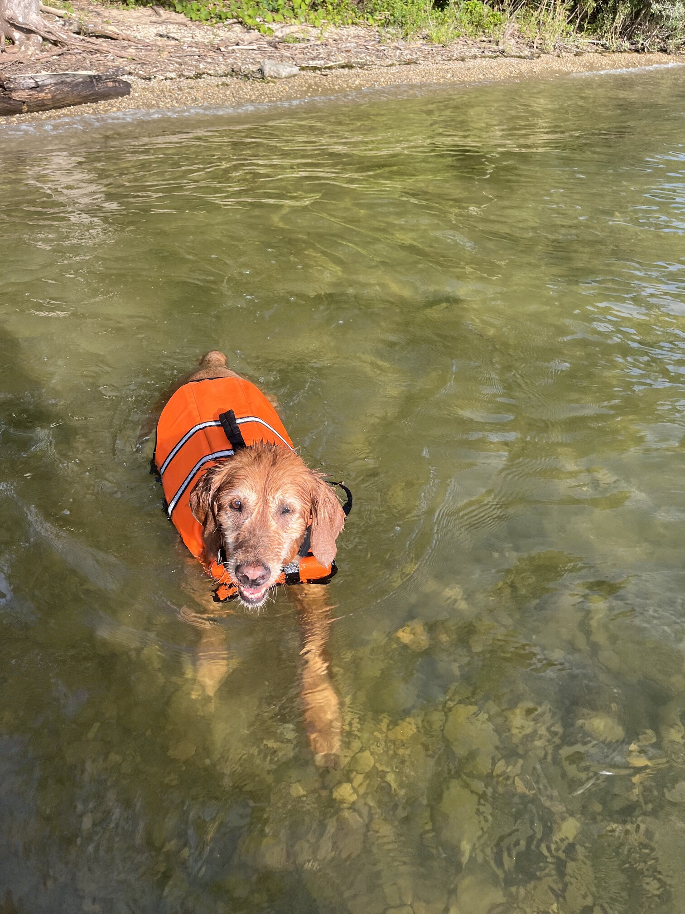
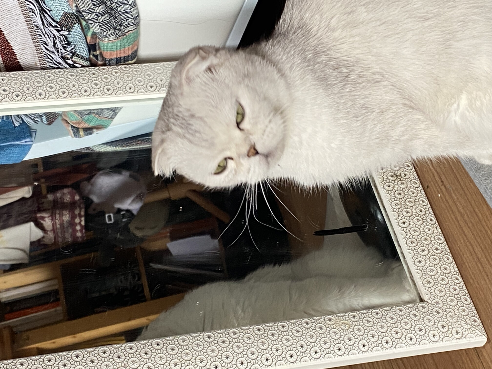
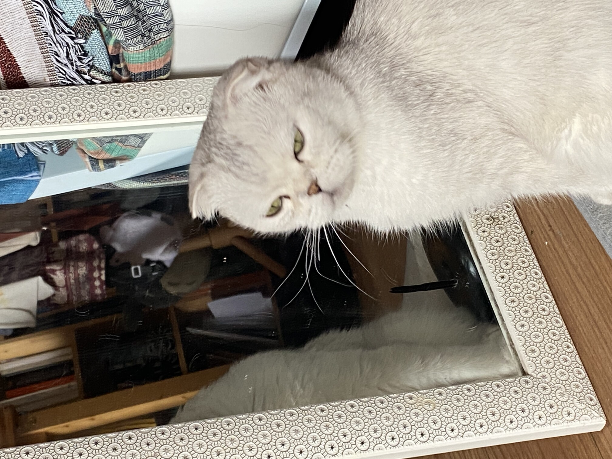

Ador

Ador is a yellow looking cat, and he really enjoys headrubs.
Adors favorite food is cat food, this is because he is a cat so therefore he likes cat fod.
Photo Gallery


Likes
- Playing Fetch
- Swimming
- Chasing squirrels


 





 



 
